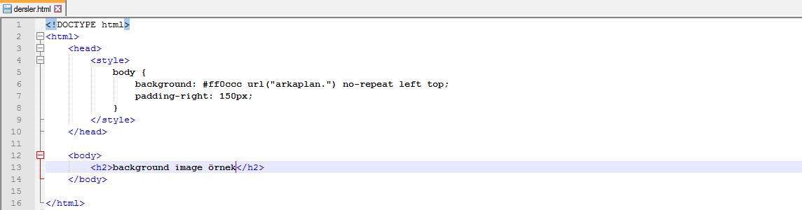
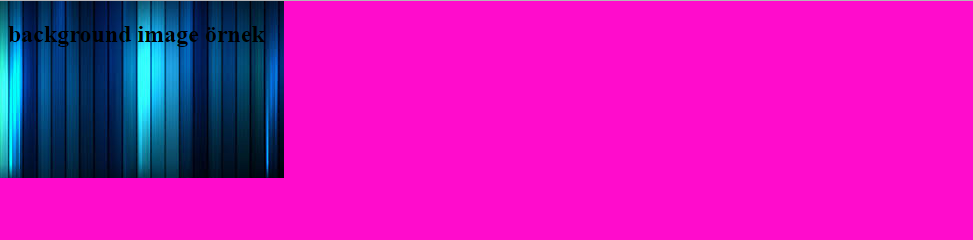
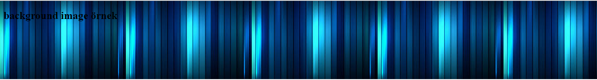

CSS Zemin Özellikleri
CSS zemin özellikleri, bir elemanın zemin özel tanımlamak için kullanılır. Bu özellikler;
- Zemin rengi,
- Zemin Görseli,
- Zemin tekrarı,
- Zemin ekleri,
- Zemin pozisyonu'dur.
Zemin rengi
Bir elemanın zemininin rengini belirler. Sayfanın zemin rengi, body kısmında tanımlanır.
body{
background-color: #000;
}
Burdaki renk kodu hexadecimal olarak girilmiştir renk geçişlerini toplamda 3 farklı yöntem ile çözebiliriz:
- Bir HEX değeri: "#de0420"
- Bir RGB değeri: "rgb(100,50,220)"
- Bir renk adı: red, blue vb.
CSS Zemin Resmi
Zemin resmi özelliği, elemanın zeminini oluşturacak görseli belirler. Normal olarak görsel zeminde tekrarlanır yani tüm zemini kaplar. Zemin resmi aşağıdaki gibi atanır:
body{
background-image: url("arkaplan.png");
}
 Bir resmi arkaplan resmi olarak ekleyebileceğimiz gibi html derslerinde anlattığım gibi <img> tagı ilede ekleyebiliriz arasındaki fark ise img olarak eklediğimiz resmin üzerine bişi ekleyemeyiz fakat burda arkaplan olarak eklediğim resmin üzerinde bir başlık görebiliyorsunuz.
Zemin resminin yatay ve dikey tekrarı
Varsayılan olarak zemin resmi özelliği (background-image property) bir görseli sayfa içinde hem yatay hem de dikey olarak tekrarlar. Bazı resimlerin sadece yatay ya da dikey olarak tekrarlanması istenebilir. Eğer zemin resmi yatay olarak tekrarlanacaksa aşağıdaki gibi bir kod yazılmalıdır:
body {
background-image: url("arkaplan.png");
background-repeat: repeat-x;
}
Zemin kısayol (background shorthand) özelliği
Yukarıda bahsedilen çeşitli özellikleri sadece background sözcüğü ile kısa ve toplu bir şekilde ifade etmek de mümkündür:
body {
background: #fffeee url("arkaplan.png") no-repeat left top;
}
Shorthand özelliği kullanıldığı zaman, özellik değerlerinin sırası aşağıdaki gibidir:
- background-color
- background-image
- background-repeat
- background-attachment
- background-position
Aşağıdaki tabloda zemin özelliklerinin tümü listelenmiştir:
| Özellik | Açıklama |
|---|---|
| background | Bütün zemin özelliklerini tek bir bildiride gerçekleştirir. |
| background-attachment | Zemin resmi sabit mi yoksa sayfanın diğer kısmında hareket edecek mi bunu belirler. |
| background-color | Bir elemanın zemin rengini belirler. |
| background-image | Bir eleman için zemin resmini belirler. |
| background-position | Zemin resminin başlangıç pozisyonunu belirler. |
| background-repeat | Zemin resminin nasıl tekrarlanacağını belirler. |
@2016 Contact abdullahcelik6@gmail.com